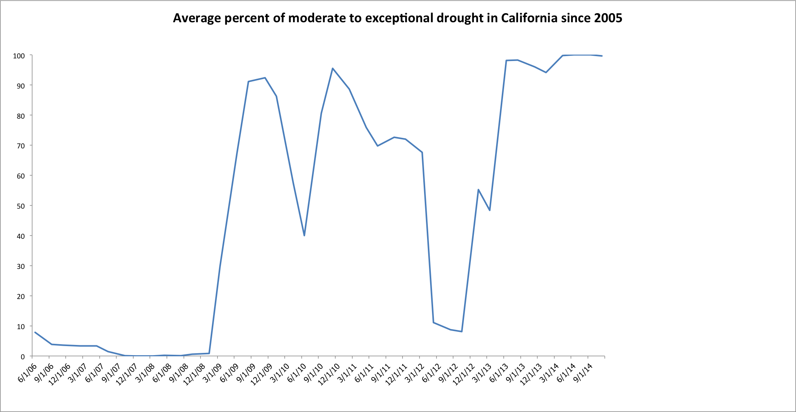

<p>
Some scientists argue that the current drought plaguing the United States due to global warming is the least covered phenomenon occurring at present. The past ten years of tabular data provided by the United States Drought Monitor reveals the percentage of the driest areas of California, according to five-month interval averages. Over the past year, nearly 100 percent of California’s regions have been sapped of moisture as the farming state suffers from moderate to exceptional drought conditions. 


</p>